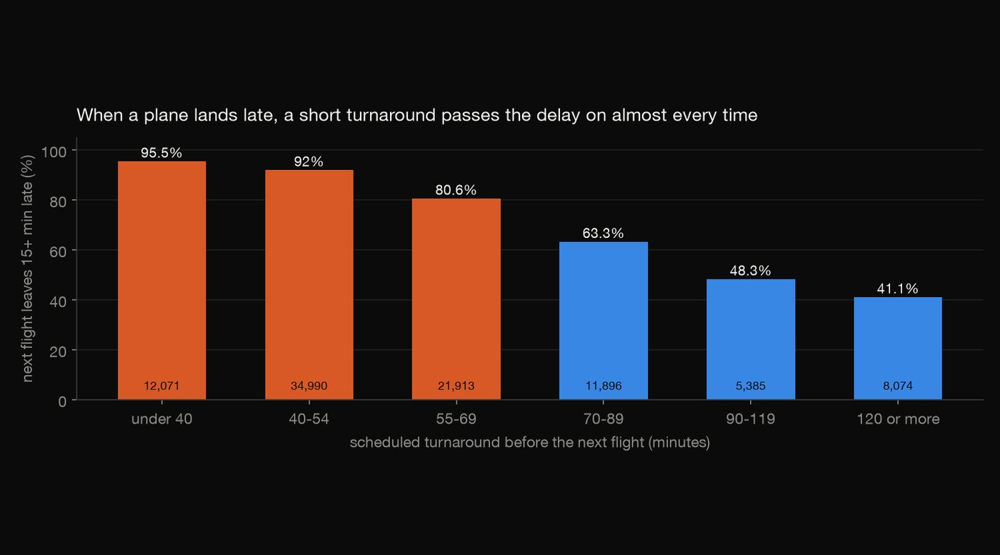
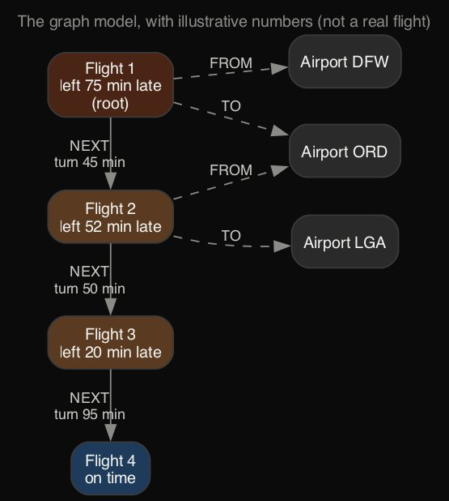
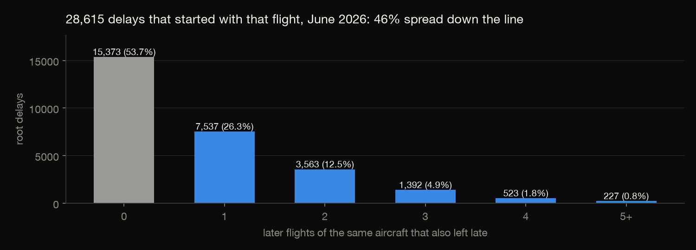
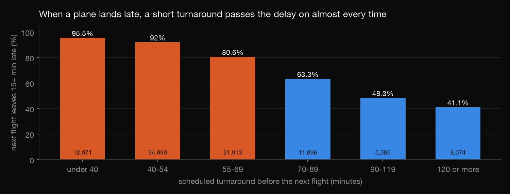
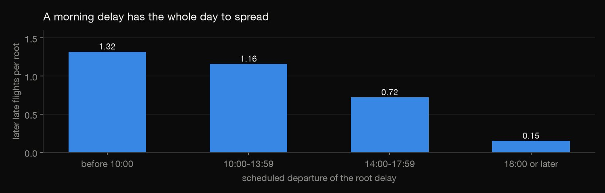

NoSQL · Graph database · 2026-10
How One Late Plane Delays Its Day
Every US domestic flight of June 2026 in a Neo4j graph, each aircraft's legs linked in order: how much turnaround time stops a delay, how far one delay ripples, and where the spreading delays start. Checked with recursive SQL.

Delay is followed by aircraft only: crews, gates and connecting passengers also carry it, and aren't in this data. One month, June 2026.
01 — The problem
A late plane makes its next flight late, and the one after that. Airlines decide how much buffer to schedule between legs, trading delay against how many flights each plane can fly. Passengers just see the knock-on effects.
How much turnaround time stops a delay from spreading? How far does one delay ripple through a plane's day? Where and when do the spreading delays start?
02 — What I built
A graph of June 2026's 607,577 domestic flights from the Bureau of Transportation Statistics:
- Flights as nodes, each linked by
NEXTto the same aircraft's next leg that day (427,664 links, carrying the scheduled turnaround), and to its airports. - Neo4j Community running locally, loaded with the offline bulk importer.
- Cypher queries for turnaround buffers, delay chains, and where and when chains start.
- Every answer rebuilt with a recursive SQL query to check it.
03 — How it was built
- 01
Link each plane's legs in order
Each flight carries its aircraft's tail number. Sorting a plane's flights by day and departure time, and linking each to the next one that leaves from where it landed, gives the plane's rotation. The scheduled turnaround is the next scheduled departure minus the scheduled arrival. Both are local times at the same airport, so time zones cancel. The median is 55 minutes.

SELECT id AS from_id, next_id AS to_id, next_dep - sched_arr_min AS sched_turn_min - 02
Bulk-load the graph
Neo4j's offline importer reads node and relationship CSVs directly: 607,928 nodes and 1,642,818 relationships in 2.7 seconds. On Java 21 it first failed until it was given access to direct byte buffers (
--add-opens=java.base/java.nio). The download was checked against Neo4j's published SHA-256.HEAP_SIZE=1g $NEO4J_HOME/bin/neo4j-admin database import full neo4j --overwrite-destination \ - 03
Follow delays down the line
A root delay is a departure 60+ minutes late whose plane didn't arrive late, so the delay started with that flight. One Cypher pattern follows the plane's next legs, up to 12, for as long as each also left 15+ minutes late. That is the question a graph database states most directly.

OPTIONAL MATCH path = (r)-[:NEXT*1..12]->(:Flight) - 04
Check it with recursive SQL
check.pyrebuilds the turnaround table and all 28,615 chains, both length and downstream minutes, with a recursive CTE in DuckDB. Every one matches Cypher exactly. It is also faster (0.5 s against 1.2 s): at this size the graph database's advantage is expressiveness, not speed.SELECT w.root_id, n.id, w.hops + 1, w.minutes + n.dep_delay
04 — Results
| Scheduled turnaround | Next flight late |
|---|---|
| Under 40 min | 95.5% |
| 40–54 min | 92.0% |
| 55–69 min | 80.6% |
| 70–89 min | 63.3% |
| 90–119 min | 48.3% |
| 120+ min | 41.1% |
- Short turns add delay: below 55 minutes, the next flight leaves 10 to 18 minutes later than the plane arrived.
- One delay, many flights: 46.3% of the 28,615 root delays spread. Together they delayed 22,113 later flights by 2.44 million minutes, 0.52 extra minutes for every minute of original delay.
- Morning delays travel furthest: 1.32 later late flights per root before 10:00, against 0.15 after 18:00.
- Where they start: Dallas/Fort Worth's root delays went on to delay 2,070 later flights, then Chicago O'Hare (1,367) and Denver (1,064).


05 — What I'd do next
- Add crew and passenger connections as further relationship types.
- Run Neo4j Graph Data Science on the airport network to find the airports whose disruption spreads furthest.
- Simulate added buffer at the worst airports and estimate the delay it would save.